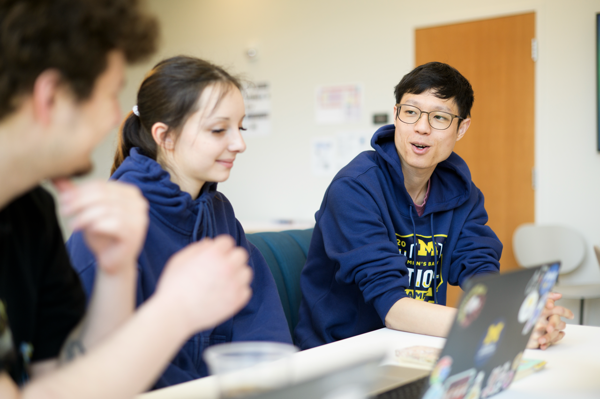
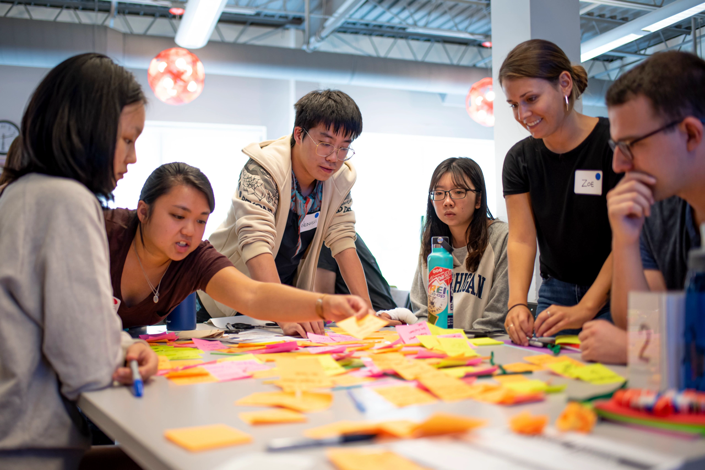

Starting the Experience
At the beginning of your project, turn your preparation into a clear, professional partnership by establishing communication, planning productive initial meetings, and confirming expectations with your team and project partner.

Why a Strong Start Matters
First impressions shape the direction of a partnership. During the starting phase, abstract project ideas become structured, professional commitments as your team and client clarify their expectations and responsibilities.
By establishing clear team agreements, co-creating meeting agendas, and aligning on the project scope early, you can build psychological safety within your team and trust with your client. Learning to navigate this early uncertainty is an important professional skill that can support the project throughout its lifecycle.

What to Establish at the Start
- Partner Communication: Create clear and professional outreach that begins a respectful working relationship.
- First Meetings: Plan productive kickoff meetings that define project goals, responsibilities, and boundaries.
- Formalizing Agreements: Document the commitments, expectations, and project scope shared by your team and partner.
Recommended Starting Process
- Contact your partner: Send a professional introduction and confirm the appropriate people, communication channel, and meeting time.
- Prepare the kickoff meeting: Create an agenda with your team and invite the partner to add questions or topics.
- Confirm the project scope: Discuss the project goals, intended users, constraints, deliverables, and measures of success.
- Define roles and communication practices: Agree on responsibilities, meeting frequency, communication channels, and expected response times.
- Document the agreement: Record decisions, milestones, responsibilities, and immediate next steps so that everyone has a shared reference.
Featured Starting Resources
Search resource names and descriptions.
- Initial Client Email Examples: Review sample messages for making clear and professional first contact with a client or project partner.
- Initial Client Meeting Sample Agenda: Use this step-by-step agenda to prepare for and lead a productive kickoff meeting with your project partner.
- Ginsberg Center Student-Client Partnership Toolkit: Explore principles and practical guidance for building respectful, reciprocal relationships with community and project partners.
- Student-Client Partnership Guide: Review guidance for setting shared expectations, defining responsibilities, and managing project deliverables.
- Student Org-ELO Partnership Agreement Template: Use this template to document the roles, responsibilities, and commitments shared by student teams and the ELO.
- SO-ELL Schedule: Review important project milestones, deadlines, and submission dates.